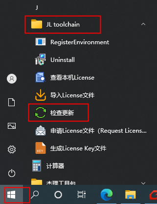
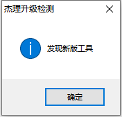
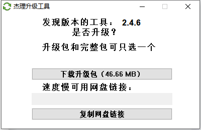
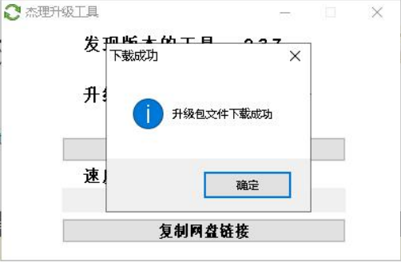
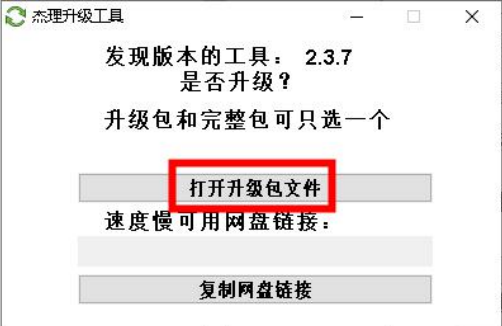
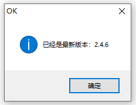

1.1.3. Updating the Jieli Toolchain
Important
Note: the method shown in this article applies only to updating the toolchain, that is, the compiler, the linker and so on.
Other tools, such as the configuration tool, the audio tuning tool and the download tool, are unrelated to this page. Do not confuse them.
For how to update the other tools, see How to Update the Tools
There are two ways to update the toolchain:
Download the latest toolchain again and install it; see Installing the Jieli Toolchain.
Use the toolchain's check-for-updates feature, as follows:
Once the Jieli toolchain is installed on the machine, whenever Jieli releases a new toolchain version you can check for updates as follows: click the
Start menuand selectCheck for updates(检查更新) underJL toolchain.
If you do not have the latest version of the Jieli toolchain, the prompt shown below appears.

Click the
OK(确定) button in the window above to open the download window shown in the figure.
Click
Download upgrade package(下载升级包) in the window above to start downloading the installation package of the new toolchain version. When the download is complete, a window appears indicating that the upgrade package file was downloaded successfully.
Click
Open upgrade package file(打开升级包文件) to start installing the downloaded installation package.
After updating to the latest version, running
Check for updates(检查更新) again displays the following message.